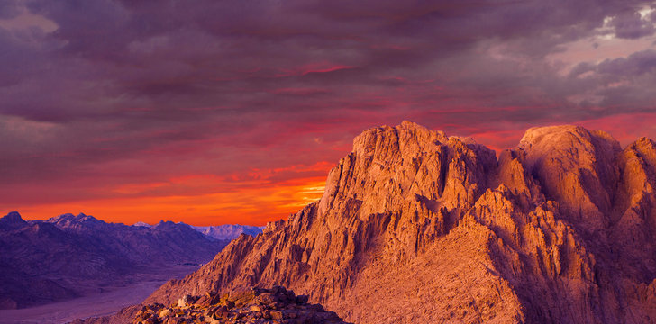
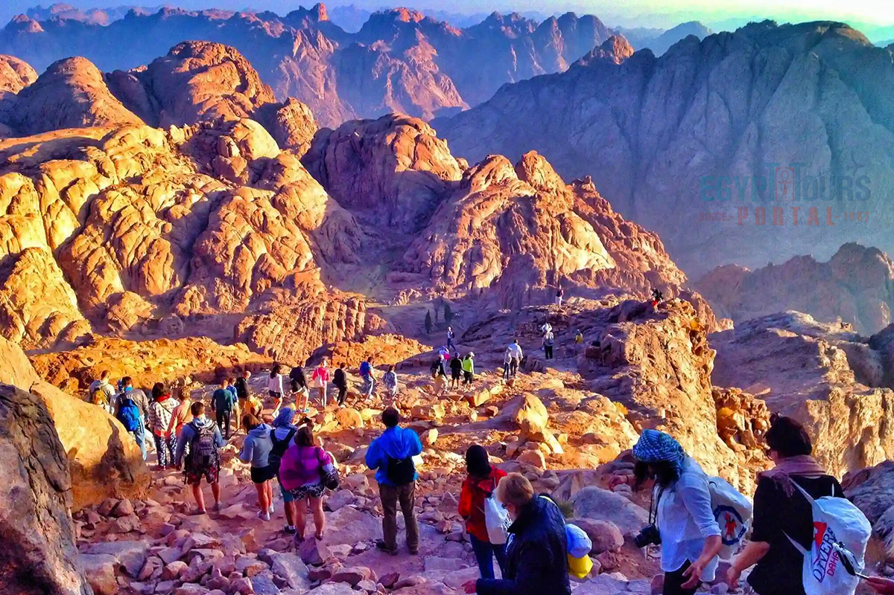

An unforgettable spiritual journey with stunning mountain views
Start the AdventureMount Sinai, also known as Jebel Musa, is a sacred and iconic peak in the Sinai Peninsula. Climbing it before dawn reveals a breathtaking sunrise, believed to be the site where Moses received the Ten Commandments.
Your hike begins at midnight under the stars. With local Bedouin guides, you’ll ascend the winding trail to the summit. Reaching the top just before sunrise offers one of the most powerful and peaceful views in Egypt.
Climb with experienced Bedouin guides who know every twist of the trail and every star above.
Recharge at scenic rest points along the mountain path with herbal tea and peaceful silence.
Catch the first light of day from the summit — an epic, golden moment you’ll never forget.
Too tired to hike it all? Hop on a camel for part of the journey and enjoy the ride Bedouin-style.